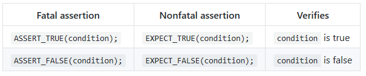

官方文档：https://github.com/google/googletest/blob/master/googletest/docs/primer.md
断言：
- ASSERT_*系列的断言，当执行失败时结束当前函数；EXPECT_*产生非致命错误，不会结束当前执行的函数
- 支持<<运算符，类似于ostream，用于自定义输出内容
- 基本断言：

- 比较
- 必须支持比较运算符，如果是自定义类型就要重载
- 使用*_EQ(ptr, nullptr) 和*_NE(ptr, nullptr) 代替 *_EQ(ptr, NULL) and *_NE(ptr, NULL)，因为nullptr是类型

- C风格字符串的比较

- main函数：
- 用户不需要写main，如果要自己写需要返回值：RUN_ALL_TESTS()
- gtest自己的入口点：gtest_main
转自：https://www.jianshu.com/p/65eb22508441
下载 Google Test
从 GitHub 上使用 git 来下载 googletest 的源码：
git clone https://github.com/google/googletest.git
编译 Google Test
我参考了 googletest 提供的编译文档，这里使用简单的 cmake 来编译。
安装 cmake
如果已经安装了 cmake，则可以跳过这个步骤，如何查看是否安装过？在命令行键入下面的命令：
cmake --version
出现相关的版本信息，则表示你已经安装过了：
cmake version 3.5.2
CMake suite maintained and supported by Kitware (kitware.com/cmake).
如果你没有安装，则可以按照下面的步骤来安装：
# Add cmake PPA
sudo apt-get install software-properties-common
sudo add-apt-repository ppa:george-edison55/cmake-3.x
sudo apt-get update
# install cmake
sudo apt-get install cmake
安装完成，进入下一步。
新建 mybuild 目录
文档要求我们新建一个目录来作为 cmake 的执行目录：
mkdir mybuild
生成 cmake 项目
cd mybuild
# 注意：${GTEST_DIR} 是你的 googletest 的路径
# 例如我的路径是：/home/orange/Documents/googletest/
cmake ${GTEST_DIR}
make
运行完上面的 cmake ${GTEST_DIR} 指令后，在 mybuild 目录下你会看到生成的 Makefile 文件，我们直接 make 即可编译 googletest：
make
make 的过程不长，并且会出现绿色的编译提示信息：
[ 9%] Building CXX object googlemock/CMakeFiles/gmock.dir/__/googletest/src/gtest-all.cc.o
[ 18%] Building CXX object googlemock/CMakeFiles/gmock.dir/src/gmock-all.cc.o
[ 27%] Linking CXX static library libgmock.a
[ 27%] Built target gmock
[ 36%] Building CXX object googlemock/CMakeFiles/gmock_main.dir/__/googletest/src/gtest-all.cc.o
[ 45%] Building CXX object googlemock/CMakeFiles/gmock_main.dir/src/gmock-all.cc.o
[ 54%] Building CXX object googlemock/CMakeFiles/gmock_main.dir/src/gmock_main.cc.o
[ 63%] Linking CXX static library libgmock_main.a
[ 63%] Built target gmock_main
[ 72%] Building CXX object googlemock/gtest/CMakeFiles/gtest.dir/src/gtest-all.cc.o
[ 81%] Linking CXX static library libgtest.a
[ 81%] Built target gtest
[ 90%] Building CXX object googlemock/gtest/CMakeFiles/gtest_main.dir/src/gtest_main.cc.o
[100%] Linking CXX static library libgtest_main.a
[100%] Built target gtest_main
sudo make install
在 make 完成后，需要将生成的文件安装到系统中，需要使用 root 来安装：
sudo make install
你将会看到下面一些提示信息：
[ 27%] Built target gmock
[ 63%] Built target gmock_main
[ 81%] Built target gtest
[100%] Built target gtest_main
Install the project...
-- Install configuration: ""
-- Installing: /usr/local/lib/libgmock.a
-- Installing: /usr/local/lib/libgmock_main.a
...省略
它们的意思是将 googletest 相关的头文件拷贝到 /usr/local/include/gtest 目录下，将相关的库文件拷贝到 /usr/local/lib 下，在 Linux 下安装程序的过程其实就拷贝文件的过程。
安装完成之后，我们必须要来测试安装是否成功，顺便学习基本的用法。
测试 Google Test
hello_test.cpp
下面我们编写一个 Hello Google Test 来测试 googletest 是否安装成功：
hello_test.cpp
下面我们编写一个 Hello Google Test 来测试 googletest 是否安装成功：
// hello_test.cpp
// 必须包含 googletest 的头文件
#include <gtest/gtest.h>
#include <iostream>
// 待测函数
int fun(int a) {
return a + 1;
}
// 单元测试
TEST(FunTest, HandlesZeroInput) {
EXPECT_EQ(1, fun(0));
}
int main(int argc, char **argv) {
// 规定的 2 行代码
::testing::InitGoogleTest(&argc, argv);
return RUN_ALL_TESTS();
}
编译
编译需要链接 libgtest.a 和 libpthread.so 这两个库：
g++ hello_test.cpp /usr/local/lib/libgtest.a -lpthread -o hello_test